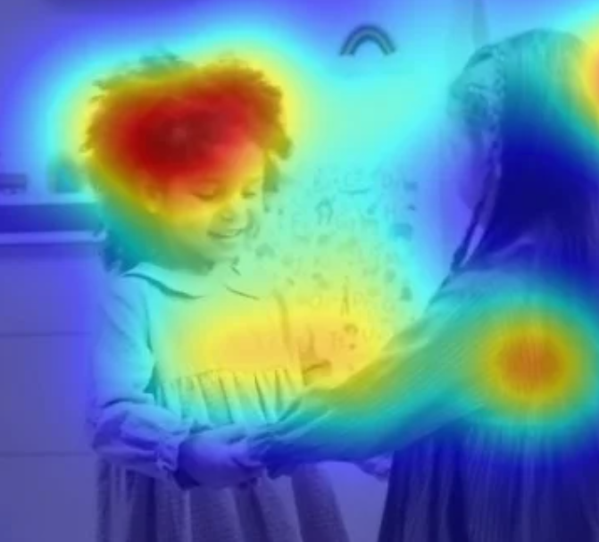
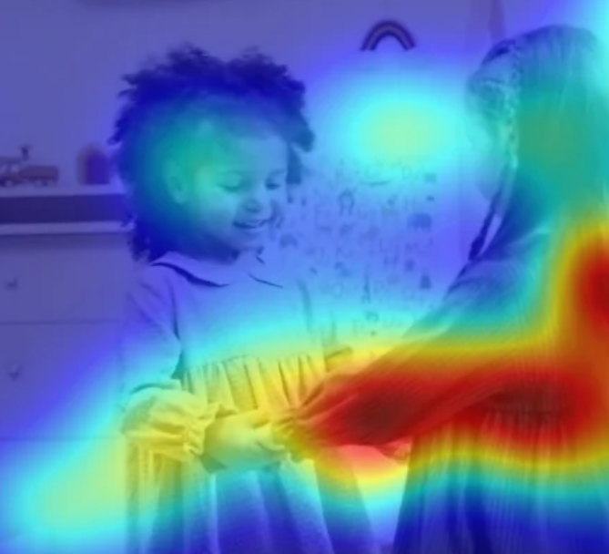
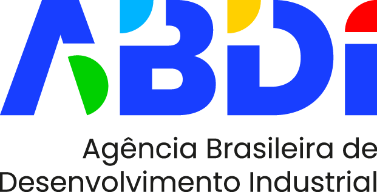
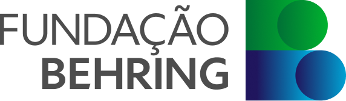
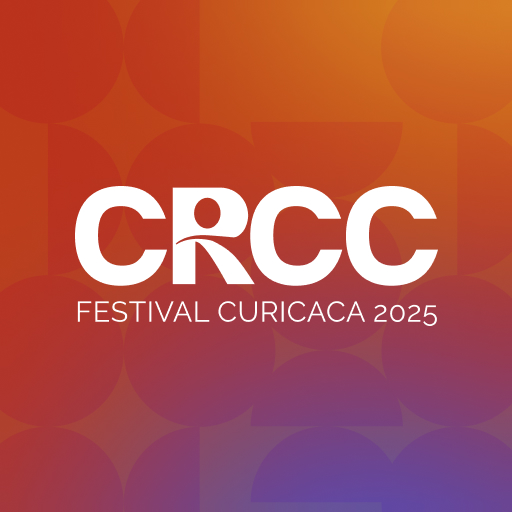
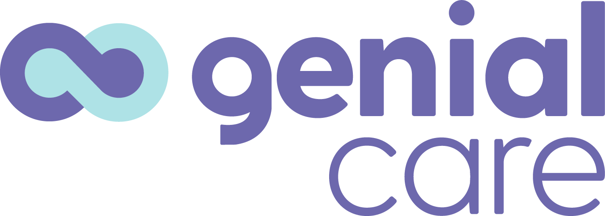

Um vídeo. Uma câmera. O risco de autismo, anos antes.
O olhar revela o autismo antes da fala.
O autismo dá sinais no primeiro ano. O diagnóstico no Brasil só vem depois dos cinco. Quanto antes, melhor o tratamento.
Tarde demais para a fase de maior efeito.
Sem sensores. Sem toques.
Uma câmera vê para onde ela olha. Sem que perceba.
Objetivo e fácil de ler. Apoia o médico, não o substitui.
Cinco minutos.
Uma vida inteira.
A mesma cena. Dois olhares diferentes.

Foca no rosto. Desenvolvimento típico.

Foca em objetos, mãos, fora do rosto. Padrão do autismo.
Só uma câmera e um vídeo.
Resultado na hora. Não em meses.
Feito para a saúde pública.
Toda criança merece ser vista a tempo.



